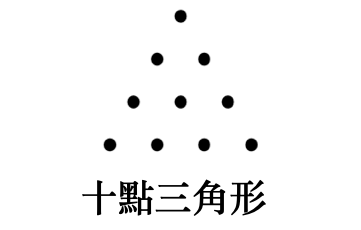

异象八：太阳系
蓝宝石
深蓝夜穹之中，
宝石般的行星闪烁：
红、绿与银白，
皆是隐藏背后太阳的映像。
* * *
这象征生命幻象的虚实交织，
融入了未见的实相。
我们栖居于灵的庙堂，
由神之明亮宇宙的匠师所筑。
* * *
处处皆是奇迹；
创造深植于转轮的韵律，
这些轮回在其想像疆域的内外上下运转：
皆因神圣之爱启迪。
* * *
映像中的映像；本质的本质；
神之意念沿巨弧沉降又攀升，
迸发生命与光的炽烈色泽，源于四碎的话语；
这点燃了火：
在永恒的时间、空间和力量中，
升腾、旋转、交织。
异象八：太阳系
涅特鲁-赫姆、马乌与马乌媞走入下一间几乎满座的演讲厅。信使说道：「即将授课的讲师，常在听众眼前将讲题化为实景；或将诸位带往时间与空间的陌生之境。故此，若讲述间出现何等奇异景象，切勿惊惶。他是此道大师，拥有宏大力量；诸位可全心信赖；无论目睹何事，皆不必惧。」
听罢这番令人不安的告诫，马乌与马乌媞怀著几分惶恐，望向步入厅内的祭司。他仪态威严，个性具强烈磁性，周身环绕著人人可见的气场。紧贴身躯处，气场化作巨大的白色光晕环绕，白光渐次转为幽美湛蓝；外围又有一圈橙黄；再外是淡紫；接著是薰衣草色；最外则是一环深红，辐射出灿烂流焰，涵纳一切想像得出的色彩。马乌与马乌媞怀著至深的崇敬与敬畏，静默凝视，为这庄严非凡的存在惊叹不已。
他身上持续焕发闪耀光芒，辉映满堂。这光辉也唤起在场所有听众自身气场的色泽回应，各自漾开柔和光晕，整体景象如此摄人心魄，言语难以描摹万一。
唯独信使未有这般反应。他洁白的临在如冰晶般纯粹无垢，安坐于马乌与马乌媞身侧；他完全掌控著自身与辐射气场的运转。然而，那是一种神圣的雪白；如此无瑕，胜过于听众充满活力、有知觉形体所焕发的暖色辉光，此白更为耀目。
马乌与马乌媞感觉到神圣信使那洁白无疵的霜晶之中，凝聚了讲师与他人所有的光与暖色；如此具保护性、安稳而神圣。
此时，讲者开言：
「我们的主题是太阳系（见下方注）的成形。尽管在此处仅能勾勒其构建轮廓，且须从至高者最初的形塑意念起笔，但我们推测，当触及未知神（最高神）的某些神迹灵感时，或会遭遇些许引人入胜、甚至令人敬畏的片段。
注：依我方术语，太阳系（Kosmos）即为一太阳系；而宇宙，乃无数太阳系的集合。神为宇宙的至高神；最高隐藏逻各斯则为一太阳系之主。
「这是诸神中的至高者，其所居层面遥不可及，连所有逻各斯（诸创造者）亦无法揣度，故祂无可名状；祂是『伟大』，宇宙的至高实体。祂之外别无更神圣的存有，且祂永不被消融。（逻各斯则不然，彼等将于大显现期终末被吸收，以待下一个活跃的创造周期再度显现。）然而，我们得以感知祂之存在所涵容的最精微本质，此种感知即为超太阳系全知之太阳系种籽；它蕴藏潜能萌发为神圣意识，足以将人提升至天界与智慧的至高境界。
「整个太阳系，乃至整个宇宙，都涵摄于气场罩之内；这罩中蕴藏著一整套进化蓝图，用以显现宇宙，以及其中一切存在与现象。
「或许你会问：『这气场罩之外，又是什么？』
「罩外尚有无尽他方宇宙，其数不可计、其广不可量，远超你我所能思议；所谓永恒或无限空间，本就没有尽头。
「但此番演讲，暂不必触及这等玄奇；太阳系终将解体又如何，亦非此刻所能深究。
「那么创造与进化的第一步是什么？乃是上界穹苍与下界深渊分判，化出七重圆圈，每圈各驻一位造化之神；此即天界，亦称七区。如是，一个看似完整的太阳系便初具规模，它源自至一至高隐密的逻各斯，并凭借其生命维系——这生命以七位创造者为媒介，每区一位。
「我们身处的太阳系即是一例，其中太阳是逻各斯最低层次的显现，作为本太阳系的中心。它是赋予生命、统摄、调节、协调、无所不在的中枢力量。它以可见之形，映现了宇宙临在的最高境地（亦即至高神），并展露七重境界中的最初亦即最低一重。
「每个太阳系的中枢太阳，在各自的物质或客体基质中，皆为气息最初原则（即话语）的最低展现；或可称之为逻各斯物质形躯的最下层。它们将主的生命倾注于其太阳系内；而一切物质力量与能量，皆转化自至高神的生命流体——这流体穿过太阳，或由太阳映现而出。
「我们不妨将太阳喻为物质太阳系的心脏，而月亮的光反映其灵性面。因此，太阳象征物质性、阳性与物质太阳系的主体，而月亮则是灵性与阴性部分的表征。后者亦是人类灵体的居所。
「正因如此，太阳在许多古远宗教中，始终是造物主的象征；指的是太阳系的物质创造，特指人、地球与其中万有。
「另一方面，月亮自古是神圣女士的象征，她是诸神之母，是至高神的神圣配偶。
「逻各斯显现之际，便是太阳系诞生之时；而太阳系那至一显现生命，即是神，即是显现的主。
「气场罩将太阳系包裹于壳内，其情状犹如原子——原子发光的外壳中含藏一颗中央太阳，众多微渺如电子的星体环绕它运行。气场罩与原子皆呈卵形，或说蛋状；因此，太阳系也常被唤作气场蛋。
「于气场罩内的太阳系中，巨硕行星皆受行星逻各斯（即神的总督们）统御；同理，原子内的微渺行星，亦由行星诸主掌管。
「须知『巨硕』与『微渺』不过是凡俗心智的概念，于神而言，意义全然不同；正如时间与空间，也无法以人类有限的理解去真切把握。
「故而，建造太阳系的首要条件，是创造气场罩。此乃神之灵性心智的物质投射；一个形象，一个意念体；借由神之意志，获取物质形状与实体。神之意志栖居于神圣之光中，而从这光的辐射（永动不息）涌现了气息，从而迸发原初光，显现那隐于黑暗的永恒意念；这便成了创造的『话语』。自这话语或咒语中，显现了气场罩，乃至整个太阳系。因为隐藏的逻各斯在罩内放射一道光线，令构成太阳与行星的胚种结实成形；而这道光线的本质进一步延展，催生诸行星逻各斯，尔后万物皆自它们的心智诞生。
「行星成形之前，乃是混沌；未来物质世界的一切本质都处于流动变化的状态，尚未成形。这便是『神之灵所默观的水』，万有浸于黑暗，有待神之气息将其化为光。当气场外壳被那光照亮，凭借生发过程，话语响起而显现。在人类智识看来混沌之物，实为灵性智慧的永恒根源。生命之水由此诞生，或说原初胚种被原初光再度唤醒。于是，神之灵运行于气场罩内的空间之水上，凝成生命气息并注入那胚种，此后它成为中心，于其中创造了阳性的行星逻各斯；最初的万物之主自此显现，并成为人类的始祖。
「切勿将前述的主等同于绝对、未知的至高神。前述的主仅是关乎行星或星球物种繁衍的逻各斯；未知的至高神则将整个宇宙涵摄于自身之内。前者虽成万物之父，然祂与无限至高神之间横亘著一道深渊——大深渊，大奥秘。祂与至高神之间，存在著隐藏的逻各斯，亦即该太阳系之主。
「七重太阳系层面依序形成：至高者为第七层面，以气场罩为表征；其次为第六层面，名为「阿赖耶–原质」层面，亦称世界之灵的心或世界之魂，乃是未知神的一个面向。此时原初质仍处于未分化、主观的前宇宙潜伏状态。某特定时刻，它承受神之意念的印记，开始蕴纳隐藏的逻各斯的阳性面向；其心豁然开启：原初质遂分离、分化，待光线透入（无染受孕），父、母、子的三元诞生，并转化为四元——父、母、子结为一体，再添上由不可触及、隐匿之神的顶点所辐射出的生命。是以，任何形体欲成客观，皆需三项原则：缺如（铭刻于星光界流质中的诸般原型）、形体与物质。那光线即为生命原则，催生活跃的显现。故而阿赖耶如其所名，乃是永恒涌动不息、先于众生的原始基底。
「下一层面为第五层面，即心智层面。此层创造感知，并连结新生的力量中心，涵括智性与躯体；这是神经力量的根本原则，亦是低等界域（如第三级的元素精灵）初萌的感知；然低等界域之下尚有客观矿物界，其感知全然潜伏，直至植物界方重新发展此能力。此层实为密传太阳系中两个低等层面与两个高等层面的中介。
「第四层面又称宇宙电层面，乃有意识的力量与建构性力量的层面；一切力皆涵摄其中。宇宙原子受宇宙电激发，宇宙意识则作用其上。宇宙电是自能量的至一源头散射而出的光，被称作诸建造者的建造者，它所化现的力量形塑了我们的七重链。在宇宙层面上，它潜藏于一切光、热、声、附著力等显现背后，是电的「灵」，是宇宙的生命。宇宙电是指引智性法则与具感知生命的灵。它非人格化之神，而是其背后力量的流溢，且为生命与光明的原初诸子之信使。
「第三层面是生命层面，亦为生命原则之层面，又名生命能量。生命无所不在，凡有原子可供作用，即有其存在。若无物质微粒可供驱动，它便静止——死寂。宇宙电作用于化合物乃至单纯物质时，便会催发生命。当宇宙电自一生命体抽离，生命原则亦随之退去，但仍统御著那具身躯的原子与分子。
「第二层面为星光界层面，而第一层或最低层即客观物质层面。
「于气场罩之内的这些层面，具备了灵与物质的一切必要成分，使一个完整的太阳系得以拥有生命与存在。
「自外观之，气场蛋的椭圆球体会显现明暗不等的光辉，端赖其个体力量；其他层面的高等存有所感知的，正是这片光芒——如同人们凝视原子所见。未来将现的海洋沉睡在水中，充塞其内；未来的大陆、海渊、山脉、行星、诸神、元素精灵与人类，亦复如是。
「如同小鸡隐藏于刚产之卵，一切潜能皆在潜伏之中。
「在气场罩内的七层面中，每层皆含一个原型，依次对应物质的七态及自然一切力量。它蕴藏每个未来人格的灵性芳香，开悟者于其中构筑物质性星光体，诸神亦复如是，从至高至最低皆然。开悟者肉身死后，便居留于更纯净的星光界区域，生活行动如常；彼时他具有五个原则，独缺星光体与肉身——既已获更高阶、更精微的显灵之具，便不再需此二者。然他始终存在于气场蛋所涵容的世界；恰如未开悟者，于两次转生之间，必得寄居尘世周遭的低层面之中。
「生命能量或生命原则充满蛋内所有空间。其为生命本质，不落于数字；虽发散自第四层面，然七层面之任一数却皆可附于其上。再者，太阳系非由数字或经数字所生，乃由数字间比例或几何而生。
「七层面亦映现于棱镜七色；每色皆具特定数字或频率之振动，七层面亦然。
「气场罩的外形，等同原子或人身周遭的淡紫气场；此为暂现之流溢，先于一切生命体成形，犹如气场蛋先于其内宇宙之形成。
「在太阳系的气场蛋里，映照人类一切思想、言语、行为，是人类所有正负力量的仓库，随其意愿收受与发放；亦是每一念、每一潜能的仓库，随即化为效力。
「蛋内的气场流质是生命与意志原则之结合，自万物万有中流出流溢，可见于一切物体周围的气场光中。开悟者可随意导引此流质，令其流动受制或增强。
「气场蛋亦承接来自高等诸神、天神及其他天使存有的一切印记。在蛋内不断发生的交织与变动中，其精质恒处于不息之动态。
「气场蛋之外是灵性太阳，或称宇宙灵，它为无限宇宙赋予灵魂，不论在时空之内或之外。神圣自我的本质是纯净火焰，不可增，不可减。因而它从未因万千造物而削弱，反如自一焰分出众焰；灵性太阳的火焰永燃不竭。
「气场蛋存于每一形体、每一草木禽兽之中；万物皆含其复本。气场蛋于人，犹如星光界流质于尘世；亦如环绕的以太之于星光界流质，或如阿卡莎（宇宙之魂）之于以太，作为超实体的本质层层环绕。简言之，阿卡莎乃构成气场蛋的基质，一种纯粹抽象的基质。我们已详论气场蛋的若干原理，并从多面观之，因它在太阳系计划中极为关键；对此研习永不足够，太阳系中一切他物皆系于此。
「你会明了，虽在我们眼中，太阳系连同其太阳与行星如此浩瀚，却不过是大宇宙海洋中一滴水。尽管我们对其起源与结构仅有模糊之见，仍能将其置于宇宙中应有之位，并对全系统之相对规模得出大略之想——此正显我们内在具有神之本质。而我们当下所居的行星链，仅是全系统的一小部分。当我们对进化诸阶段略有概念，并知晓在诸行星上、在星光界与其他界域中，万物万有如何演进之时，亦展露此一神性。
「最高逻各斯在最初构建气场蛋之际显现自身，并携来过去太阳系之果实；即那些强大的灵性智性体，他们将成为其同工与代理人，建立现今的太阳系。其中最崇高者为「七者」，被称作诸逻各斯；各居其位，皆为太阳系中特定部分的中心，正如最高逻各斯为整体之中心。此七位存于太阳中的存在，乃从「母-基质」本有之力中自我诞生，且绝对者气息之能量使其成为有意识之存有。此种自发成觉之历程，源于至一显现之生命；其本身为绝对者的映象，而这至一显现之生命即是最高逻各斯自身。
「我们的太阳系由这七重划分，取得七种特征；往后一切分化，皆按降序重现这七音的阶次。
「各七逻各斯之下，皆有低阶的智性体阶序，构成神之国度的统治者。其名号甚多，又有无数建造者，依隐藏之逻各斯的型范，塑成万般形体——这些型范藏于隐藏之逻各斯心智的宝库中。思绪自祂传予七者，各自在其神的至高指引下，规划所属界域；然亦各染其独特色彩。这七界域称为消融中心，乃七个零点，标志分化音阶的起端。于消融中心之上，可窥见生命七子朦胧的形上轮廓，即赫尔墨斯及其他哲学所言的七逻各斯。自消融中心始，元素分化，进入太阳系的构成。
「凡脱离消融状态者，即成活跃生命；卷入运动漩涡。然进化未始之前，自然处于同质——或谓绝对均质。元素须自原初质（憩于消融状态的母体，即涅槃之同义）充分分化，方能在客观层面构筑世界与天体。实则，此乃一切实体的涅槃式消融；是在一生命周期后，融归原始状态的潜伏。此乃过往物质之影，发光而无体，属消极之境——然其憩息之中，暗藏将成太阳系的活跃力量！
「但须明了：诸世界非建于消融中心之上、非居其内、亦非其延展；消融中心之零点是一种状态，而非数学上的一点。太阳系是行星演化的场域；于此场中，如金星、火星等物质行星，仅是其生命阶段的短暂体现；每一消融中心亦然。
「每一消融中心，皆有一演化者或统治者，可视为行星逻各斯。祂自太阳系的物质中撷取所需原材（源自中央隐藏逻各斯的流泻），以祂自身的生命能量加以锻冶；每一行星逻各斯皆以其独特方式运化其自家界域的物质，并从共同库存中汲取。由于其界域七层面中的每一原子状态，皆与整个太阳系各亚层面的物质相同，整体连续性得以维系。原子本身虽同，其组合比例在各行星上却有变异。每一原子亦有七重存在层面，一如我们的太阳系。
「然将原子比拟为太阳系时，亦当铭记：相对于宏观宇宙，太阳系亦是微观宇宙，正如人相对于太阳系是微观宇宙。每一原子具七存在层面，各层受面特定演化与返本法则支配。原子内有热，外亦有热；论及宇宙电时，请留心此点。
「深入太阳系之前，且更细察原子；此于往后理解太阳系将有所助益。
「每一原子皆有一中央太阳，有或多或少的行星环绕运转，称为电子。对人而言，电子极小，超乎任何影像侦测之域（见译注）；因无足够短的光波可成其像。纵有 γ 射线侦测之仪器，其波长仍逾百倍，无以观测电子。然现代科学已成功测定电子（所谓『新』的组件！）的电荷与质量；同时科学认定，电子不具任何『寻常』物质属性。人不免要问：『物质（如电子）何时起变得如此不寻常？』至于尺寸大小之疑，科学有两方式：其一乃研究碰撞过程。但科学于此遭遇难题：电子乃已知最轻的粒子，且带电荷。故研究之法，只能将之与其他电子相较。然电荷使此过程极难，因尚无万全定律可适用于电子间的碰撞。无论如何，若观察质量较大原子的碰撞过程，或可略推测其尺寸；并假定电子必有一半径，居于中心一定范围，由排斥力的平方反比律界定。寻常的惯性物质由原子核组成，且电子间距远大于电子与原子核之尺寸；故以普通物体的标准描述此等粒子的空间维度，终属徒劳。因而欲求电子大小，须另觅他法：须假设电子并非一块具寻常引力惯性或质量之物……无论那是何物。」
译者注：二〇〇七年，美国布朗大学研究团队宣称，以平面传感器捕捉到单个电子在液氦中的运动。此后，亦有人声称「原子力显微镜」可呈现原子核外轨道上的电子。然而我们仍保留作者原述——此类「新见」无分毫损其论述。
「然而电子具惯性，亦即质量，学界遂信其全部质量皆蕴于电磁场中。此场布有虚构的力线，弥漫空间。
「此处我们再次不自觉地指向宇宙电。
「欲使电子运动，必先使之加速；加速即引发电磁扰动，迫使电子周围的力场重新排列，并以光速传遍空间。于是产生一概念：所谓电子惯性，实乃电子抗拒其自然状态变动之性质。此惯性可依麦克斯韦电动力学定律推算。所得方程式给出一球体半径——电子电荷必须集中于此球内，方有我们所观测之惯性或质量；二者皆已实测得证。
换言之，若假设电子惯性全在其电磁场内，便可算出一球半径；电荷须聚集此中，始得观测之质量。
「此外，电子自有磁矩，且沿轨道自旋。两电子间有成对倾向，如平行自旋与反平行自旋之例，亦已证实。
「于是科学渐次窥见亘古已知的神秘法则，竟与古人结论相合；纵使各自探勘自然奥秘时，所用方法与术语迥异。
「上者如下，下者如上。
「观察电子种种现象，竟与太阳系的创造相类似。
「然科学未悟：物质非独立实体，灵亦不是。二者皆绝对者之表征或方面，共构有限存在的根基，不论主观还客观存在。
「此理于柏拉图与亚里士多德所述诸元素亦然。他们所谓的元素实对应我们太阳系四大界域之无形原则；古昔采用的魔法体系，是一种心灵性的异教观，以及对各种力量的神格化。这种灵性化的作用，使信徒与诸力紧密相系。实则此诸力阶序可分为七级，由可思议渐至不可思议。此乃真正宇宙阶序——自化学物质性直抵灵性。
「宇宙每一原子皆潜藏自我意识，本身即一宇宙，也是为自己而存在的宇宙。既是原子，亦是天使。每一原子、每一实体皆须经自我体验，方为自己挣得神性资格；哲人黑格尔亦识此点，尝言无意识者在宇宙中演化，正为求取清明自我意识。
「是故卡巴拉训曰：
气息凝为石，石萌为草，草化为兽，兽进为人，人升为灵，灵归于神。
「今当探问：隐藏之逻各斯在构筑气场蛋以作为未来太阳系基胚时，其过程为何？首先，祂自己身射出一线光，入于原初太阳系质料；此即最初显化。到了第二阶段，男女双重抽象之力被位格化。自此质料之「男—女」位格化中，分离出子，即第三原则，内含七种力，称为创生诸力**。
「此七力或七子由七行星所表征，诞生自母，亦即黑暗。太阳不在七者之列，因祂先于七者存焉。
「父，或称空间，乃万有之永恒因，是不可理解之神，祂那不可见的袍，是一切物质与宇宙的神秘根源；乃未分化物质所织之袍。此太阳系出现前之「根基」实为绝对者之一面，为自然一切主观层面的基础。
「宇宙由内而外运转。每一外显之动作或行为，不论出于自愿或机械、有机或心智，皆源自内在感受或情感、意志或意愿，及思想或心智所主导。整个太阳系亦然—，受一序列几无穷尽之有觉存有阶序引导、控御、活化，诸存有之使命乃作为宇宙法则之代行者。
「宇宙及太阳系，实为诸意识状态之巨大集合，整体成于七重群体；觉知力显现于七个不同面向，对应物质七种条件、状态或性质。故秘传算数中，一至七之数列乃自最初显现的原则起计；若从上起算，其数为一，若自下或最低原则计之，其数为七。
「诸神与人类同源，皆始于原点，即至一永恒绝对统一体。在客观物质层面上，此统一体化为原初质与原初力量，分属阴阳。于形上层面，则成宇宙之灵，或称宇宙理型，亦名逻各斯，正如毕达哥拉斯三角形之顶。
「七颗主行星各有一摄政者，监督尘世神灵的创造工作。这些摄政者是自我诞生的神之七子，名为禅那主或祖灵，亦是影身种族之父，影身种族自七主辉煌躯体中降生。如你所知，影身种族被唤作幽影。
「七主之中，三位属神圣至善，四位却不那么崇高，且欲望充盈；而影身种族，亦即幽影，秉性与其父辈相同。这便解释了人性中善恶七等的分野。
「诸摄政者自空间诞生；在太阳系活动前，空间被称为母；待其初醒，则称『父-母』；其后遂成『父-母-子』。
「因此，一切行星皆受善恶之力支配，此力源于最初的七主；我们初次呼吸时，祂们便将自身印记烙于我们心智、神经、骨髓、静脉、动脉与脑质之上。只要活著，我们便在其掌控之下；当行星于太空运行，我们心境亦随之变迁，足以颠覆国家或个人——颠覆之法，端看这些力量如何引导我们，以及我们如何回应！
「论及神之意念，并非指某位神圣思者产生了念头，而是指绝对者之思；过去与未来，皆凝结于永恒的当下。
「神非自我，非非我，亦非意识；虽非认知对象，却能承载并催生一切对象与存在，使万象能被认知。祂是至一本质，从中显现一能量核心。故宗教唯有一种，即对神之灵的崇敬。
「太阳系物质最初凝聚于其本源太阳核心周围；然我们的太阳（及后来其他行星）在收缩之际，脱离了那本源太阳旋转的物质，因此我们的太阳实为行星之兄长；它是长子，而非行星之父。
「崭新黎明初颤之刻，光射入太阳系深处，以新生之姿重现，直至太阳系周期终结；此乃万物与众生之胚种；是光与生命的创造者；是智慧的炽焰之龙；是话语，是神之意念。人只需沐此光一次，便不再受幻象帷幔所欺。万物之胚种——亦即世界胚种——由灵性粒子或超感知物质构成，处于原初分化之态。神谱之中，每颗种子皆是永恒有机体，从中进化出天界众生，即神灵。
「星球成形之前，显现为宇宙尘埃或火雾的长轨迹，如蛇在空间中游移扭动。此真理化为古代符号的教导：神之灵行于混沌之上，乃以火蛇之形；祂于原初水面呼吐光焰，直至孵育宇宙物质，使之呈蛇环之状，首尾相衔；此符号不仅象征永恒与无限，亦象征宇宙间一切星体之球形，皆自那火雾中凝成。
「混沌、逻各斯与太阳系，三者综合，即为空间之三重象征。
「物质于每个新宇宙重建之始仅是原初质；原初质不灭，故亦永恒，无始无终，是所有物质现象的根源，是神之本质或基质。
「物质之辐射物周期性聚为各级形体，从纯粹灵性到粗重物质；其抽象存在即是神自身，是不可言喻、未知的至一因。『大地表面』上的『黑暗』，实为绝对光，是七个基本太阳系原则的根源。在此意义上，它便是神自身，如前所述。混沌是无形无感无觉的液态原则。灵则是活化万物的智性原则。
「两者结合，诞生了太阳系，混沌的物质成为其躯体。物质与灵相融，便有了知觉，『欣然发光』，于是显现初生的光，乃灵、智性、物质三者构成的三角形，亦称灵魂、心智、身体。
「此三角可诠释太阳系内外一切表里的显化。
「故太阳本身亦是三重合一：其一是核心太阳，除启悟者外无人得见；它是一切宇宙之因，是至善与完美，是隐藏之神的标记与内在。
「其二为至高智性或智慧，统御所有能思之物。其三即我们可见的太阳，显现于物质的太阳系中。
「换言之，内在太阳乃宇宙的大逻各斯，太阳智性的纯粹能量由此而来；太阳智性作为一种灵性力量，借由可见的太阳创生万有，从不假借其他媒介。
「正因如此，毕达哥拉斯学派的菲洛拉斯受神启示而说：『太阳是火之镜，其光焰映于镜中，倾洒我等身上，这光辉我们称之为形像。』他以此隐晦深奥之言，指向那核心的、灵性的太阳——其光线与辉芒，仅由太阳系中央之星，亦即我们可见的太阳所映照。
「上图三角形一点朝上，象征七重太阳系中较高的三层面，以及神圣与灵的无形界。另一点朝下，则代表原型界、智性创造界，以及实质成形界。来自后三世界的光线，降临至第七层面——我们这尘世与物质界。
「故而，两三角形交错、中央一点，正是尘世的象征，被六个更高层面所环绕；一切灵感与能量皆从这些层面倾注至第七层面。
「那更高的三层面是神圣无形之灵的居所，物质层面的存在无从得知、也无法理解。若依柏拉图学派所赋予的意义，原型界非属此世，因它存于神的心智之中；它实是未来世界的初胚，而后受物质界承袭遵循并改进。然而这些后续的世界一旦投射为物质，在获得固体性的同时，也将失去等量的纯粹。
「行星及其物质组成粒子的七种根本转变如下：
- 同质。
- 气状而辐射，或曰气态。
- 星云之貌。
- 原子态，空灵；运动由此起始，分化亦从此开端。
- 胚种态，炽热且分化，但仅由初始元素的胚种构成；它们在尘世完全发展时，共有七种状态。
- 四重态，朦胧；此即未来的地球。
- 寒冷态；须依赖太阳方得生命与光。
「腓尼基神话中，最初的七位主被称为西迪克之七子（或麦基洗德之七子）；他们等同于七埃洛西姆、七卡比里、埃及普塔的七子，以及《死者之书》中拉的七个灵体。在亚述神话里，他们则是七鲁玛西或七伊犁；始终为七，是空间之母或混沌中最初诞生者（无父母）。
「空间与时间乃一切存在之源。
「诸神起初为空气之力，后升格为人类的计时者，分配于七个星座。这最初的七星并非行星，而是七个星座的主星；这些星座随大熊座旋转，标记年岁周期。此类星座有二，第二个是小熊座，其星被称作北极龙的七首，亦是《启示录》与《阿卡德赞美诗》中的七头兽。
「哲学家维克托·库赞曾言：『理型是人类理性的纯粹概念对象，是神之理性的属性。』
「柏拉图亦说：『神依形式与数字塑造事物最初的样貌。』
「一切自然法则皆以量化陈述呈现，这印证了毕达哥拉斯学说——因数字是和谐法则的最佳表征，贯穿太阳系与宇宙。
「有人说，世界在各层面的发展过程中，是一部活跃的算术，是在多样中实现统一的几何，演化著并渗透万物。圣保罗亦证此理：『万有皆出于祂，藉著祂，且在祂之中。』

神秘的「十元组」，以 1+2+3+4=10 表达此念。一，是神或灵；二，是物质；三，融合灵与物质，兼具两者特质；四，为现象世界。故「十」乃万象总和，涵摄整个太阳系。
「映现于人身的『七个原则』，实为大自然七种物质力量；而七阶序在灵性上映像于人的心智中。
「诸般力量的组合及其与微观宇宙的调谐，几何上等同于咒语『A-UM MA-NI PAD-ME HUM』。
「七重大自然的演化周期如下：
- 神圣，或灵性。
- 通灵，或近神。
- 智性。
- 欲望。
- 本能，或认知。
- 半物质，或星光体。
- 纯粹物质，或肉体。
「创造历程循此七步展开。最初的创造，是原始自我演化，必需化为神之心智、意识与智性；秘传而言，此即宇宙之魂的灵，源于至一，既非首亦非末，而是一切。自外传教义观之，此乃至高者之作，是永恒起因的自然结果。
「第二创造，始于前太阳系元素（物质）分化的最初气息阶段。此时，第二阶序显现：禅那主或称诸神为形体之始；彼等即七圣人，日后成为七星之灵。时值火雾时期，乃宇宙生命脱离混沌的第一阶段，原子自消融中心迸发。
「第三阶段为有机体创造，亦即感知的诞生。此创造充盈善性，并造就最初不朽者。
「第四创造，植物界自潜藏的矿物界有机进化而出。这居于三高等界与三低等界之中点，指的是太阳系与地球那七个秘传的界域。
「第五创造，是意识与感知觉醒萌动，在地球某些敏锐植物身上隐约可察。此乃动物之创造。值此演化时期，那绝对永恒的宇宙运动或振动（秘传语中称『大气息』）分化为原初显现的原子。
「第六创造，是神灵的诞生，他们是人类第一种族的原型；在当时遥远的未来，他们将成万族之父。
「第七步骤是创造人类，使其各方面皆臻完备，并对自身一切思想行为负全责。
「须知，神秘形而上学中有两种神。其一为至一，不可知、不可触，居于绝对与无限的层面，关于祂，无可知晓；其二则是流溢层面上的神。此点务必铭记。前者是最高神，既无从流溢亦无从分裂，因祂恒常、绝对、不变；然第二种神，作为首神之投影，能行此事，因祂是幻象宇宙的至高逻各斯。
「自至一本质涌现一能量核心，名为话语；亦是神圣的克里斯托斯，永在父怀中。
「重申：话语乃阴性逻各斯，表示为光、音与以太的本体。
「逻各斯映现了圆满界中的万有；同理，人类亦映现自身于世间宇宙所见之一切。
「吐露出气息或称话语后，太阳系物质漫布并形成元素；而那大气息，便是宇宙在无限、恒存的空间中，持续不绝的运动。
「天界气息（或生命之息）亦存于每只动物、每个活跃的微粒与每个原子之中。然唯人类拥有对至高存在的意识。此气息即欧伊哈呼，是无休宇宙运动的旋风，是驱动万物的力量。于是，无限无际的物质之海规律收缩与扩张；这脉动引致所有原子的普遍振颤。大自然的运动从未歇止。行星凭自身内在之力运行，因诸般力量皆源于神，且各具其本有之力。
「于生命这场伟大奥秘与戏剧中，物质的太阳系犹如投射在白幕上的人物剪影。但真实的人物与事物始终隐而不显；同理，人与事亦不过是实在于白幕上的投影；而真实，藏于大幻象之后。
「无物被创造，唯有转化。此间宇宙，无论是巍巍星体，或是倏忽一念，必早已存在于宇宙中，否则无从显现自身。主观层面是永恒的如是、恒在的存有，尽管会有千百般灵性上的转变；客观层面则是无尽的生成，因万象皆归于短暂。而从抽象意义上说，自然并非无意识，它本是绝对意识的流溢，意识遂为自然在显现层面的一重面相。
「真实隐于宇宙帷幔后，那帷幔便是浩瀚的宇宙物质。此乃太阳系创生过程中的一具器官，未知的太初造主借此辐射其能量与智慧；此未知造主对于太阳系的诸逻各斯而言亦属未知，对我等亦然，一如诸逻各斯对人类而言是未知的。
「在实修的神秘学中，唯有透过意识、心智与物质感知的理解，方能以几何图形使逻各斯可见。细研几何，不仅能科学地阐明神之智慧七子确然存在（源自未知最初神与太阳系之光），更揭示出此七子及其无尽流衍、位格化能量中心的重要性，无此则太阳系无从成立。尽管秘传教义中，诸般力量如光、热、电，皆被称为诸神。
「太阳系中有三支主要的建造者群体，以及三支主要的行星灵群体；每群复分为七个子群。
「诸建造者或曰诸创造者，乃最初『心智所生』实体之代表，即太初七子。第一群于每个梵天之夜（四十三亿两千万年）后，重建太阳系；第二群被称为我们行星链之建筑师；第三群则涵括人类的祖先。
「行星灵主宰诞于其星座下者的命运。
「论及以太与原初质，便触及了存在的太初与终末；然二者不过是至一绝对存在的两面向。以太是星光界流质；原初质是物质；而同时，以太亦为原初质的低等原则之一。
「我们人可借由宇宙基质中物质的无数显化，在灵性上感知神之意念；此意念之真义，永难言诠，唯少数人能以此途径体会。
「然此处所论，仅关乎我们目所能见的太阳系；至于宇宙尺度上的太阳系，其奥秘之深，纵使此系之最高天使亦无从知晓，因彼等从未穿越边界，窥见其外——此边界隔绝无数太阳系与中央太阳。我们仅能说明：每个宇宙尺度的太阳系，或称银河，皆有一颗中央太阳。当今所用望远镜已可证实，于我们星系之外，约十亿光年内，散布著五千万至一亿个银河外星云。这些星系中的中央太阳，驱策宇宙电搜集原初尘埃；此尘埃云可见于银河，即所谓暗星云；尘埃聚成球体，在宇宙电推动下沿会聚线运动，终而彼此靠近、凝聚。
「因它们散处空间中，无序无章，世界之胚时常碰撞，直至最终聚拢，化为彗星。争斗由此而起。年长者吸引幼弱，或相斥相拒。许多被更强者吞噬而湮灭，幸存者则成诸世界。这便是「火焰之战」、「天界之争」、「泰坦之役」，以及奥西里斯与提丰相斗——诸神话所述，皆指此事。
「宇宙电是太阳系电的建设性力量，被喻为自父之脑与母之怀迸发，继而分化为一男一女；换言之，将自身极化为正电与负电。
「『父-母』等同于原初以太或星光界流质，其子宇宙电本与化生太阳前的星光界流质同质。宇宙电令七兄弟固化并分散，意谓电力注入生命，将原初质（创世前之物）分离为原子，此即一切生命与意识之源。
「宇宙心智借由宇宙电，将理型铭刻于物质之上；宇宙电是电力融汇了智性。可知，南北极光皆蕴含宇宙电，二者皆显现于地磁核心。两极，乃太阳系与地球生命力（即电）之储库、容器与释放口；若无此天然安全阀，地球早因过量电力而崩解。极光现时，常伴尖锐声响，如哨鸣、嘶响与爆裂之音。
「宇宙电于惰性基质中颤动，使其活跃，并导引此在宇宙意识的七大层面上进行根本分化；此七层面，即七种原质，各自作为相对同质之基。随宇宙演化、异质渐增，它们分化为可感知之现象，呈现纷繁复杂之貌。
「宇宙电乃炽烈的旋风，是神最初七子之意志的信使。
「宇宙电亦为一座桥梁，令存于神之意念的理型，得以印刻于太阳系基质，化为自然的法则。它是太阳系理型之动态能量，亦是智性媒介，即那神之意念本身——经由禅那主传递与显化，禅那主乃可见世界的建筑师。宇宙电更是心智与物质间的神秘纽带，为活力原则，使每一原子带电而获生命。在宇宙尚未显现时，宇宙电与太阳系尚无关联，因太阳系未生，仍沉睡于「父-母」怀中。彼时它仅是抽象哲理或理型，因其造物之时未至。它只是潜伏的创造力量。待觉醒之刻来临，宇宙电将催生七处消融中心。意即，于宇宙显现时期，伟大法则为成就形体与创造，在七个不可见之点上，持守或更易其永恒动势。消融中心即零点或零线，乃绝对否定之境，或是那至一绝对之力，是为中性之轴；非属任一面向，而是其核心。此中性之中心，乃追寻永动者之梦。
「太阳系的内在运动不可见、永恒且无休；其外在运动，则受感知支配，有限而周期性。唯有太阳系内在的灵魂无始，亦无终（即不变神之意念中之理型太阳系）。
「宇宙电无所不在，亦存于星光界。心智于两世之间、寓居星光界时，便驱动此电以活化所需之星光体；人身亦同样由宇宙电、以炙热火花之姿赋予生机。宇宙电对星光体而言，更似一层护佑、赋予生命的罩衣或气场。
「宇宙电与至一生命（即最高神）紧密相连。在赤道、黄道与两回归线所成之圆圈内，宇宙电的力量掌控著气候变迁。
「古代经文有载：宇宙电与其诸子的光芒炽盛，犹如午日太阳与明月相合；且那中间四重圆圈上的四子，『得见其父之歌，闻听其「日-月」辉光。』
「此言意谓：宇宙电力于地球南北两极搅动，在夜间生发五彩辉光，兼具以太、色相与声响等性。声响乃以太之特征；它产生空气，性质属于触感；复经摩擦，迸发光与色。
「故而，宇宙电是位格化之电力，是宇宙能量在超然层面的统一体，既存于不可见之境，亦显于形体界。其作用，近似于意志所创造之活跃力量——于诸现象中，那看似主体者作用于看似客体者，并驱使其行动。
「宇宙电不仅是力量之活跃象征与容器，更被神秘主义者视作一实体；其作用之力，涵摄太阳系、人类与地球层面，并于各层施展影响。在地球层面，其力显现为磁力与活跃力量，源自磁化者强烈的渴望。
「于太阳系层面，它存于构建万物的建设性力量中——从行星系统，至萤火虫微光、娇嫩雏菊，无不依循自然心智或神之意念的蓝图，关乎特定事物或存有的发展与成长。自形上观之，它是诸神客观化的思想，是较低层次的『话语成肉身』，是太阳系与人类理型的信使；是宇宙生命的活跃力量。
「其二，宇宙电即太阳能，是生命电流质与存续的第四原则，亦即自然的兽性之魂，或曰电。我们更进一步主张，电不仅是物质，更是某种实体的流溢；此实体既非神亦非魔，而是依循永恒法则、统御并引导我们世界的无数实体之一。
「科学亦得此结论：电乃有形之物，具备寻常物质的若干特性，包括移动能力；此论已追上古老的奥义教导。
「科学知晓电能以独立电子、质子或正电子的形态存在，或凝聚为诸般实体的集合电荷，如电流所呈现的纷繁样貌。
「科学知悉电子在导体中的渐进流动，称之为『电传导』；亦知带电离子的双向穿行，谓之『电解传导』。电流可能源自电子及其他带电粒子在真空中的飞驰，或显现为电荷的实体位移，犹如静电起电机的情况。科学谈论位移电流，发生于电介质乃至真空之中，或可解释电磁场与辐射之行为；然科学对电之真实本性，或依我们术语所谓宇宙电，仍无明晰定见。
「电与万有引力同属宏大谜题，然在此例中，实则并无所谓万有引力，而是太阳系中存在相吸与相斥之力，由此生发平衡。
「太阳为一巨大磁体，其周环绕宏大磁场，一如太阳系中所有天体皆具此场；原子、一切活跃或沉寂之存有与事物，亦皆拥此磁场。
「诸位当记得我曾言及，原子中两电子若自旋反向，则倾向结合而彼此吸引。此理亦适用于炽热物质所构成的天体，由初始中央太阳于创造之初抛射而出。若干自旋平行的球体迅即形成磁场，当以切线射入太空，此场能护其免于与他球相撞，并排斥他体，使彼此在太阳系空间中保持合宜距离。此等脱离太阳系的球体遂成『彗星』。磁场看似使光线弯折，实则未然。此种仿佛干扰光束直线途径之象，引起若干当世科学家诸多谬见与误算。来日他们将发现，关于此象及其他现象之本质，古传教导全然正确，而所谓『现代』科学实为谬误。
「三百余年前，开普勒已察觉太阳为一磁石，虽彼时尚未发现太阳系中引斥力之法则。恩培多克勒斯称此二法则为『爱』与『憎』，意即相吸与相斥。此等法则皆不可视作『盲目』运作，而忽视智性创造力之存有——拉普拉斯之见即如是偏失。
「中心有一点之圆，亦象征周围环绕气场或磁场之行星；或象征原子，乃至我们整个太阳系——因后者亦具磁场，形貌若卵型气场；或象征地球及其周环之磁场，能反射无线电波，并以切线之姿折返地表；此即电离层，或称肯尼利–海维塞德层，悬于地表一百六十至六百四十公里之上。
「人类此气场可随意开启，从而允任何力量或状态进入，只要内在心智愿与之通感。当意志奋力持守气场于封闭之态，便可阻绝一切意念体、一切外来的意念图像或灵性启示，无论善恶。若敞开气场，即容许光明或黑暗、善缘或恶影响流入。
「透过不间断的专注与冥想，我们能在周身凝成强大灵性保护场，甚至可阻任何物质存有或他类生命与我们进行物质接触。此事屡以诸般方式得证：譬若战阵之中，有人枪林弹雨里全然无伤，拥有所谓『护盾』；或如强大术师立于魔法圈内，诸元素精灵皆无法近身——亦为明证。他例之中，当所爱之人陷于险境，仅是爱之念头便可为其复上一层护罩；此亦一种证示。
「我们可透过这气场或磁场，以相反方向，从内向外投射强韧的意念体。正如电波、电流或力量够强，便能穿透地球气场，飞越太阳系空间，抵达太阳系链中其他星球。太阳周缘发光的外壳，称作光球层或色球层，亦是我们所论的磁场或气场。它看来如珍珠母，可比宁夏海洋，微风拂过，水面便起细皱。这片海中，可见非凡纹样，一如人体气场。有时呈透镜状，或似柳叶，以不规则轨迹交错四散，不断幻化新形。这些形体长不短于一千六百公里，宽在三百至五百公里之间。它们自有生命，释放热、光与电（宇宙电），借由太空中的以太介质，传送至行星。此即生命力，即生命与能量，唤醒万物；它们契合于循环运动的法则，此法则在太阳系创始之时便已设计。法则恒常不变，运动方式却多样，随每一新周期起始而更易，由太阳系之魂内的智性体调控。太阳创生之过程，如光一般绵延不绝；无物能阻挡或局限；实则，这些流溢皆是映象。
「我们可将太阳喻为太阳系原子，它在物质层面化为七原子，各成一能量中心。每个原子又在灵性层面转作七道光线；继而衍出大自然的七种创造力量，皆自「根‑本质」辐射而出。
「原子自中心流溢出来，于其内部孕育两处新能量中心，在宇宙电的潜隐气息下启程运作，并繁衍其他较小的中心。
「这些中心依次演化，形成新的根，终而承载人类的地球成形，乃至一切界的属、种与类。
「这些无形辐射物存于宇宙意志的和谐中，是所谓太阳系意志的集体或总和，存于主观宇宙层面；它将无数单子（每一单子皆映照自身宇宙）结合，暂令一独立、全知且普遍的心智得以个体化。透过同样的磁性聚拢过程，他们藉星际原子为己塑造客观可见之身。是以在灵视者眼中，高等行星力量显现为双重样貌：在主观上为影响，在客观上为神秘形体而成临在；灵与物质实为一体！因灵乃物质居于第七层面；物质乃灵处循环活动之最低点；二者皆属幻象。
「我们自火之海（超星光界流质）获取星光界物质（或称火蛇）；此火之海源于根源（未分化之太阳系基质）的初始辐射。
「诸单子可略分三类。第一类，自最高层面起算，是诸神或太阳系灵性的诸自我，即宇宙的建筑师。
「第二类为元素精灵，亦即诸单子，他们无意识地构筑相应于各自界域的宏大宇宙镜像。
「第三类为『原子』与物质分子，它们依次由其「具感知」的单子塑形，如同人体每一细胞那般。一群如此成形的原子，反过来结为分子。世间有无数单子（即元素精灵），亦有无数灵性力量。灵性力量纯粹非实体，因而并无单子，仅在特定法则下方偶尔显形，且不必然为人形。唯土与水才能孕育出有生命的存在，因二者构成尘世层面的原初质与创造力的阴性法则。但须先经太阳的炽热原则受孕，使太阳的灵与物质元素结合，象征物质之生成。于是，单纯的物质细胞经灵受孕后，自身分裂为二，遂以智性科学难解的神秘方式诞生了。细胞内萌生的意识，乃神初始意识的最早显现。矿物自有生命，会染疾，亦能繁衍同类。晶体可移动，展现类近植物的生殖过程，也会中毒。这些大自然的实情，近来也为物质科学家所识。
「一切生命起源皆发生于行星之上；它们如此微小，却与太空中最巨恒星同令人敬畏。随著时光骄步溜逝，微尘彼此聚集结合；而在动物血液中，更栖宿巨量生命实体。一立方毫米血液里，足容四百五十万枚微细红血球浮游！一平方毫米面积上，可布百万只直径约一微米的细菌，例如葡萄球菌；它们互不重叠，排列为千行千列的单层，占满一亿立方微米。
「一茶匙土壤中，通常有二十亿细菌，占土壤体积四分之一。
「阿米巴虫则以万亿计，随处可见。牠们没有固定形状，宛如活著的果冻斑点，以独特的无定形姿态爬行，伸出身体任一部分包裹食物颗粒。静止于流体中时，形状近乎球形。
「某些细菌会生出鞭毛，借此游动。
「人类与其他哺乳动物，皆始於单一细胞；雄性精子与雌性卵子融合，形成哺乳动物的单细胞胚胎。这细胞各有核，分裂为二时，两半几乎相同，却非全然一致。
「更微小的是病毒，被定义为引发动植物传染病的微粒，直至近期藉电子显微镜方得见；目前尚无任何过滤器能完全阻绝其通过。
「植物动物终将死亡，微生物却可能不朽；它们只会因外力暴毙。高等动植物的繁衍与重演过程复杂，微生物与此毫无共通。这些微生物已处进化最低阶段，无物可重演。
「微生物细胞不仅独立存活，更能分裂繁殖倍增。科学尚未知是何驱使微生物分裂为二，亦不知为何有些微小生命仍保持志留纪形态；例如该时期的板状珊瑚，与今日海洋中的火珊瑚或有孔虫极似。原生动物乃生命最低等形式，现今种类虽增，本质与数百万年前无异。科学不理解智性体所直接控制的元素力量，是如何用于建造、塑造、成形与改变，而一切奇迹的奥秘，正藏于其中。
「若将人的层面或原则，对应太阳系层面、以及神由上映射至下的三重层面，可见：未显之神映现于宇宙之灵；宇宙潜在理型映现于灵性之魂；而宇宙或太阳系的活跃智性，则映现于人类之魂。此为神之三面向在人身的投影。
「尘世之灵耶和华（或称诺亚，名号任择）统辖涵纳生命的空间；其太阳系能量（或称混沌能量）映现于兽性之魂；星光界理型反映尘世事物，对应星光体；耶和华的生命本质映现于人类生命本质；而尘世则映现于人体。
「凡存在者，皆为双重：易朽与不朽，肉身与星光体，光明与黑暗。凡在神之心智之中的，不可变易；凡映现尘世的，必将迁变。尘世之映象，或向外攀缘，或向内观照，皆能回映天界。
「万物生发，先在灵性概念中成形，后于物质界显现。神之灵中蕴藏未来世界之魂；逻各斯的心智里蓄有创造与智性之力；星光界里浮动著成形的世界与星光体；而从诸神的有形之身，映现出行星、万物与众生之躯。
「我们太阳系的七颗星球，串成一道行星之链。此链于演化中历经七重阶段，在行星生命中七度解体与重塑。每一道世界链，皆为另一较低世界链的后裔与创造物，亦为其转世。这七次投生构成了行星的演化，乃是行星逻各斯的疆域。因有七位这样的逻各斯，故可见七种行星演化（各自相异）共构太阳系。正如古训所言：『一光生七光，七光再生七，七乘以七。』
「每颗星球上演化著七支人类种族，另有六个非人类的界域相依存。星球演化的第一轮次中，元素为火，矿物原型降临，将于第四轮次以最致密之态臻于完善。第二轮次中，元素为空气，植物界生根，将于第五轮次达至圆满。
「第三轮次里，我们初见人类原型：形似猿猴，周身覆满茸茸鬃毛。动物原型在此轮次降临，将于第六轮次臻于完美。此轮次特征为水。第四轮次则专注于人类的原型形体，即今日所知之人，将于第七轮次达至圆满。此轮元素为土；厚重稠密，以最物质之态显现。」
讲者于此驻语，凝视听众，静立如入最深的冥想中。此时无声亦无动静，然厅堂渐次晦暗，唯祭司周身那灿烁光晕可见，其余形体尽没于虚无。不久，就连那环绕他的光晕也开始明灭转淡；直至忽然间，一片沉实厚重的黑暗，与万籁俱寂，统摄了一切。
马乌与马乌媞猝然受惊，急著去握对方的手——却愕然发现，不仅触不到彼此，连自己的身躯也无影无踪。两人仿佛飘浮在漆黑的浩瀚里，无边无际。
在这空间之中，他们全然孤绝，被黑暗紧缚，不能动弹，亦不能言语；恐惧将这两缕失落的灵魂凝住了。
涅特鲁–赫姆去了哪里？难道连他也抛弃了他们？还是同样陷于迷惘与无助？
但片刻之后，他们记起讲座前他给过的警告。他曾说：「别怕，他是位伟大的大师，拥有庞大力量；信他，切莫慌张。」刚忆起这话，四面八方便闪现一大片星子——上方、下方，数以百万，不可胜数；那友善灿烂的光泽，隐隐带著抚慰，但没有一丝月亮的踪影。
此时的寂静，比最响的声音更骇人，却又蕴含难以想像的庄严与力量；充满了敬畏与奇迹，恍若神本身的意念遭凝冻；而祂的低语，虽偶尔曾传入倾听的灵魂，此时却永远静止。在这寂静里，强大的事物正在酝酿；意念叠著意念，凭借不可见本质所蕴藏的隐秘力量——创造之灵的动能——建立起宏伟的城堡与殿堂，披覆著灵感所发出的光辉对称与优雅，并闪耀著诗性升华的荣耀。然而，此时仍然孤寂而遥远，浸透著对于同情、理解与甜美陪伴的渴求，唯有同类的灵魂方能缓解。
可是，那可怕的黑暗穹苍依旧蔓延，只有遥远无垠的星点，别无他物；马乌媞与马乌在寂静的虚空中无法动弹，等待著未知。一种可怕的预感，再度自他们灵魂深处升起。
毫无预兆，黑暗中忽然漾起一阵难以形容的骚动；颤动的涟漪仿佛搅动了神秘的幽暗，在黑暗聚拢的孤寂里起伏。接著，一声隆隆而悠扬的雷响，在广阔的空间中回荡；声音嘹亮，振奋人心……何等强烈浩瀚的荣耀！
这「话语」响彻了未知神颂歌旋律的一切可敬庄严；祂是强大的主，超越一切理解，超越一切圣洁，超越一切神圣；祂是圣灵；是受福三位一体的至高点；超越太阳系领域诸总督所蕴含的神圣智慧深度。
一声又一声，雄伟的话语如雷在这幽暗墓穴中回响。驱动著，唤醒著，直至一股更沉重的震颤穿透那看似空无的黑夜；仿佛百万只千翼巨大蝙蝠鼓动硕大翅膀，自阴沉山脉的洞穴腾空而起；这乌黑如死的山峦，竟似从太阳系虚空的深处升起。
此刻传来嘶嘶声响；恍如一队野蛮骑兵策马冲锋，一齐自银质鞘中抽出弯刀。
一股漩涡起伏的浪潮在动荡波涛中翻滚，从无垠深渊升起，朝著远方星穹高高隆起。
话语依旧响著；它以七乘七乘七的音节吟唱，似钟声，似天使合唱，亦似大鼓搏动。一束强大的灿烂光芒自星际领域射来，穿透黑暗与混沌的堡垒。它迅疾而笃定地刺穿黑暗，如剑锋没入颤抖的身躯。
在那厚实、致密的前宇宙巨核之中，一股强大的火已然点燃，伴随生命的咆哮与跳跃。令人眩目的火焰升起、旋转、欢快舞动；同时，太阳系尘埃云自四方落入火中，咆哮的火舌越跃越高，火势愈发磅礴，终在太阳系深处形成一颗中央太阳——一个炽热发光的球体，缓缓旋转，照亮星野间巨大而中空的洞穴，直到逐一从视线中消失；黑夜让位给辉煌的光，那光自神的巨大灯中流淌而出，应和著嘹亮的话语。
从前黑暗统治之地，如今有了光明、生命与喜乐。在神之造物的气场外壳内，只要黑暗空间之子（「明亮的脸」）仍是最高统治者，夜蝠便将消逝，不再得见。
而今，大轮绕轴旋转；其回旋愈广，动量愈增；喜乐之火愈发明亮地照耀，无边无际，甜美愉悦。自火中升起火焰神灵，祂们向上腾升，彼此交融。一个接一个显现，首现者是那闪耀者，即最初诞生的，占据空间中央之位，立定，永恒不移，在苍穹上灿烂微笑，于圆圈内生活。随后又有七位这般伟大存在现身，结成一条强大的链；不久，他们亦将自转，沿巨大轨道绕行中央者，向其兄长致敬——只要时间持续存于空间与光中。
中央之火永恒燃烧，它最初被神的伟大光束唤醒，此光束而今已不可见。天上确然欢欣鼓舞；当诸闪耀者沿其炽热的轨道前行，便形成一天界合唱，由欢腾七子的高亢声音组成：此即诸星球的乐音。